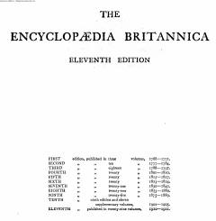

EBEncyclopaedia Britannica ensiklopediyasining yettinchi jildi.
Ushbu kitob Encyclopaedia Britannica ensiklopediyasining o'n birinchi nashri bo'lib, yettinchi jildni o'z ichiga oladi. Unda 'Constantine Pavlovich'dan 'Demidov'gacha bo'lgan mavzular, shuningdek, turli fan va san'at sohalariga oid maqolalar jamlangan.